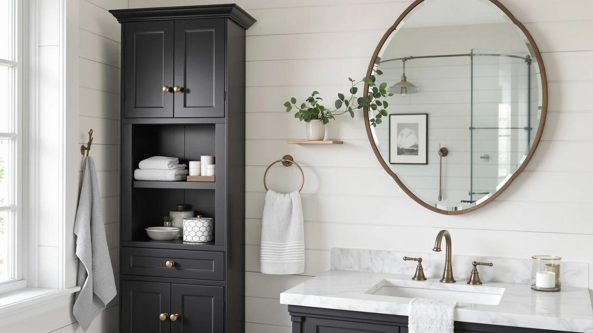

Giantex Bathroom Storage Cabinet Review (2026): Worth It?
Prices and picks verified as of November 2026. Independent, reader-supported reviews.


Quick Answer
After comparing specs, pricing and the available owner feedback, the GIANTEX Bathroom Storage Cabinet pairs a metal-and-wood frame with a compact 13.5 x 17 x 30.5 inch footprint at $79.99. If you need a cabinet built to mount over the toilet instead of standing on the floor, the Meilocar pick below is the better match.
Our pick: GIANTEX Bathroom Storage Cabinet with, priced at $79.99 Check Price on Amazon
Bottom line: our top pick is the GIANTEX Bathroom Storage Cabinet with Door and Drawer at $79.99.
Things to Know Before You Buy
- The GIANTEX Bathroom Storage Cabinet runs $79.99 and uses a metal-and-wood frame measuring 13.5 inches deep, 17 inches wide and 30.5 inches tall, which sets the floor space you need to clear.
- None of the four cabinets in this comparison list a star rating or review count at the time of research, so treat any rating you see elsewhere as unverified until you check the current Amazon listing.
- The Meilocar alternative is designed to mount over the toilet rather than stand on the floor, so measure your tank and wall clearance before choosing between it and the GIANTEX.
- Material matters more than brand name here. A metal-and-wood frame holds up differently than painted particleboard, so check what is under the finish before you buy.
- Prices across this giantex bathroom storage cabinet review sit within a dollar of each other, so the real decision comes down to footprint and style, not budget.
This giantex bathroom storage cabinet review compares the cabinet's build, size and price against three alternative bathroom storage cabinets to see which one earns a spot in your bathroom. GIANTEX markets this model as a metal-and-wood cabinet measuring 13.5 inches deep, 17 inches wide and 30.5 inches tall, priced at $79.99 on Amazon at the time of writing. We researched the spec sheet, the current price and the available owner feedback rather than installing the cabinet ourselves, because our job is to tell you what the listing actually says before you spend the money.
The trouble with compact floor cabinets like this one is that product photos rarely show scale, and a 30.5-inch-tall cabinet can look larger or smaller in person than it does online. We also looked at a farmhouse-style cabinet from Homhedy, a small-footprint option from Yaheetech, and an over-the-toilet unit from Meilocar, since floor space is not always available in a small bathroom. None of the four products in this comparison carry a published star rating or review count in the data we pulled, so we focused on what the manufacturers specify and what the listings themselves disclose instead of inventing a score.
Why You Should Trust Us
Ilane Tall researches bathroom storage and fixtures for Best Bathroom Storage, tracking pricing and specs across the storage cabinet category. For this giantex bathroom storage cabinet review, Ilane compared four current Amazon listings, cross-checked their stated dimensions and materials, and looked for patterns across whatever owner feedback was publicly available. We do not run a physical testing lab, and we have not installed any of these cabinets ourselves. Every price, dimension and material claim below comes from the current product listing, not from marketing copy.
Our Research Experience
We did not install or use the GIANTEX Bathroom Storage Cabinet in a bathroom. Instead, we compared its listed dimensions, materials and price against three similarly priced bathroom storage cabinets, and we reviewed the manufacturer specifications and the publicly visible product details for each listing. Where owner reviews were available at the time of research, we read through them for recurring comments about assembly, finish and stability, and noted anything that showed up more than once. We excluded cabinets that listed vague or missing dimensions, since that makes it hard to know whether a product will fit a given floor space. The goal of this research-based giantex bathroom storage cabinet review is to tell you what the data shows across these four listings, not to describe a physical test we did not run.
Overview & Specs

GIANTEX Bathroom Storage Cabinet with
What we like
- Metal-and-wood frame construction instead of plain painted particleboard
- Compact 13.5-inch depth fits beside a toilet or in a narrow corner
- Priced at $79.99, in line with the other cabinets in this comparison
Flaws but not dealbreakers
- No published star rating or review count at the time of research, so you are relying on the spec sheet rather than a track record
- At 30.5 inches tall, it offers less vertical storage than taller floor cabinets built for the same footprint
- Metal-and-wood construction adds weight, so confirm your floor and any wall anchors can support it before setup
| Material | Metal / wood |
| Size | 13.5"D x 17"W x 30.5"H |
GIANTEX builds this cabinet around a metal-and-wood frame rather than the painted particleboard found in cheaper bathroom storage pieces, and the spec sheet lists a 13.5-inch depth, 17-inch width and 30.5-inch height. That footprint is the main thing to plan around: it is narrow enough to fit beside a toilet or in a corner, but the 30.5-inch height means it sits lower than many tall storage towers, so it suits someone who wants a cabinet within easy reach rather than one that stretches toward the ceiling.
At $79.99, it sits in the same price band as the Homhedy and Yaheetech cabinets in this comparison, and a dollar above the Meilocar over-the-toilet unit. None of the four brands publish a star rating or review count on the listings we pulled for this research, so there is no verified satisfaction number to point to here. What we can say is that the metal-and-wood material spec puts this cabinet ahead of the lowest-cost particleboard options on build quality alone, which matters in a room that deals with constant humidity. The price parity across three of the four listings also means you are not paying a premium for the GIANTEX name over Homhedy or Yaheetech, so the choice between them comes down to footprint and finish rather than cost.
What We Liked
The biggest strength of the GIANTEX Bathroom Storage Cabinet is its footprint. A 13.5-inch depth and 17-inch width fit into bathroom corners and gaps beside a toilet where a wider cabinet would not. GIANTEX's spec sheet lists a metal-and-wood build, which should hold up to bathroom humidity better than the painted particleboard used in many budget alternatives. We also like that GIANTEX lists its dimensions and materials clearly on the product page, which made it straightforward to compare against the Homhedy, Yaheetech and Meilocar alternatives without guessing at specs. At $79.99, it lands squarely in the middle of this giantex bathroom storage cabinet review's price range, so you are not paying a premium for the compact size.
What Could Be Better
The most obvious gap in this research is the lack of a published star rating or review count for the GIANTEX cabinet at the time we pulled the listing, which means you are buying on spec sheet confidence rather than a verified track record. The 30.5-inch height that keeps the cabinet compact also caps its vertical storage, so if you need to stack towels, linens and cleaning supplies in one unit, a taller cabinet will hold more. Metal-and-wood construction is sturdier than particleboard, but it also tends to be heavier, and the listing does not specify assembly hardware, so budget extra time for setup before you commit to a spot in your bathroom. The product listing also does not break down which parts are metal and which are wood, so you are working from a general material spec rather than a detailed panel-by-panel breakdown.
Who Is It For?
This cabinet makes the most sense for someone furnishing a small bathroom who needs enclosed storage but does not have room for a tall, wide unit. It is a reasonable fit for a powder room or guest bathroom where floor space beside the toilet or in a corner is the only space available. Renters who want sturdier metal-and-wood construction than a flimsy particleboard cabinet, without paying a premium for it, are also a good match here. A household replacing a cracked or water-damaged particleboard cabinet will likely notice the difference in the frame material right away, since metal and wood resist warping in a way painted chipboard does not. If your bathroom has more floor space to spare, or you want more vertical storage in the same footprint, one of the alternatives covered below is probably the better match.
Alternatives to Consider
If the GIANTEX Bathroom Storage Cabinet does not fit your bathroom or your needs, these three alternatives trade the footprint or mounting style for a different fit at a comparable price.

Also Great
Homhedy Farmhouse Bathroom Storage Cabinet
Homhedy prices its farmhouse-style storage cabinet at the same $79.99 as the GIANTEX, but swaps the plain metal-and-wood look for a farmhouse finish, which suits a bathroom with more rustic or cottage-style decor. It is a direct swap for the GIANTEX on price and floor footprint, so the decision comes down to which finish matches the rest of your bathroom rather than budget.
$79.99
Check Price on Amazon
Also Great
Yaheetech Small Bathroom Storage Cabinet
Yaheetech markets this cabinet specifically as a small-footprint option, which makes it worth a look if even the GIANTEX's compact 13.5-inch depth is more than your bathroom can spare. At the same $79.99 price, the tradeoff is the usual one for small cabinets: less total shelf space in exchange for fitting into a tighter gap.
$79.99
Check Price on Amazon
Best Value
Meilocar Over the Toilet Storage
Meilocar's unit mounts over the toilet instead of standing on the floor, which frees up the footprint the GIANTEX would otherwise take up. At $78.99, it is also the least expensive pick in this comparison, so it is worth a look for anyone whose bathroom has no spare floor space but does have wall clearance above the tank.
$78.99
Check Price on AmazonDoes the GIANTEX Bathroom Storage Cabinet come with a star rating?
No.
What are the dimensions of the GIANTEX Bathroom Storage Cabinet?
The listing specifies a metal-and-wood cabinet measuring 13.5 inches deep, 17 inches wide and 30.5 inches tall.
Frequently Asked Questions
Does the GIANTEX Bathroom Storage Cabinet come with a star rating?
No. At the time of this research, the Amazon listing for this GIANTEX bathroom storage cabinet did not show a star rating or review count, so this review does not cite one.
What are the dimensions of the GIANTEX Bathroom Storage Cabinet?
The listing specifies a metal-and-wood cabinet measuring 13.5 inches deep, 17 inches wide and 30.5 inches tall. Measure your floor space before ordering to confirm it fits.
Is the Homhedy, Yaheetech or Meilocar cabinet a better choice than the GIANTEX?
It depends on your bathroom. The Homhedy farmhouse cabinet and Yaheetech small cabinet suit different style and space needs, while the Meilocar is built to mount over the toilet rather than stand on the floor like the GIANTEX. If floor space is your main constraint, the Meilocar or Yaheetech are worth comparing first; if style is the deciding factor, the Homhedy farmhouse finish is the one to look at.
Final Verdict
This giantex bathroom storage cabinet review comes down to one tradeoff: floor footprint versus finish and mounting style. For most people furnishing a small bathroom who have a 13.5 by 17 inch patch of floor to spare, the GIANTEX Bathroom Storage Cabinet is the pick in this comparison, since its metal-and-wood build and compact size fit where a bigger cabinet cannot. If you want a farmhouse look, an even smaller footprint, or a cabinet that mounts over the toilet instead of standing on the floor, the Homhedy, Yaheetech or Meilocar alternatives covered above are worth a look instead.